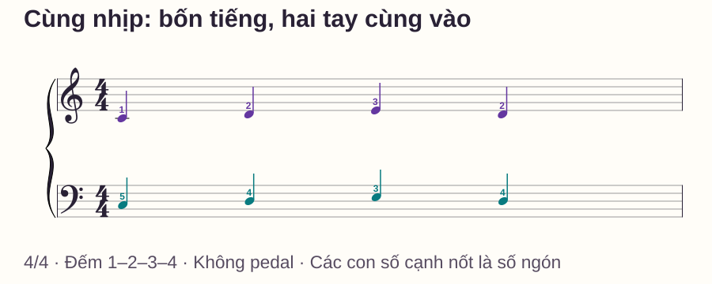

Phối hợp hai tay
Hai tay cùng nhịp: bài tập piano đầu tiên cho người mới
# Hai tay cùng nhịp: bài tập piano đầu tiên cho người mới
Bạn đặt hai tay lên đàn, định chơi cùng lúc nhưng luôn nghe tay phải đi trước. Khi cố sửa, cả hai tay lại nhanh dần hoặc một tay dùng nhầm ngón. Đừng vội thêm nhiều nốt: trước hết hãy nghe được hai tiếng khởi đầu có khớp nhau hay không.
Bài này dùng ba nốt Đô–Rê–Mi trong một ô nhịp. Bạn có thể thực hành trực tiếp trên piano hoặc đàn điện; toàn bộ mẫu nhạc, số ngón và cách đếm đều có ngay bên dưới. Chưa cần đọc thành thạo hai khuông nhạc.
Trả lời nhanh
Để tập piano hai tay cùng nhịp, đặt tay trái ở Đô thấp và tay phải ở Đô giữa, cách nhau một quãng tám. Chơi một cặp Đô trước, nghe xem có hai tiếng lệch nhau, rồi nối mẫu Đô–Rê–Mi–Rê. Mỗi nốt kéo dài một phách. Tay phải dùng ngón 1–2–3–2, tay trái dùng 5–4–3–4. Đếm đều 1–2–3–4 và nhả nốt cuối khi tới số 1 tiếp theo. Nếu khó, trở lại một cặp phím thay vì cố chơi hết mẫu. Chỉ thêm nốt khi cả hai tay vào cùng thời điểm, giữ đúng độ dài và bạn không phải dừng để chọn ngón.
Vì sao cùng nhịp vẫn dễ lệch?
Hai tay cùng chơi Đô–Rê–Mi nhưng không dùng cùng dãy số ngón. Khi âm đi lên, tay phải đi từ ngón cái về phía ngón giữa; tay trái đi từ ngón út về phía ngón giữa. Nếu cố bắt hai tay dùng cùng số, một tay sẽ đi sai hướng.
Ngoài ra, bạn có thể biết nốt kế tiếp ở một tay nhưng chưa chuẩn bị tay kia. Khi đó, lệch tiếng là dấu hiệu cần kiểm tra vị trí hoặc ngón, không đủ để kết luận tay trái “yếu”. Ta sẽ thử từng nguyên nhân bằng cách giữ nguyên thời gian và thay đúng một nhiệm vụ.
Chuẩn bị vị trí và đọc hình
Trong bài, C = Đô, D = Rê, E = Mi. C4 là Đô giữa; C3 là Đô thấp hơn một quãng tám. Tìm Đô ở ngay bên trái nhóm hai phím đen. Nếu chưa chắc, xác định hai nhóm phím đen tương ứng rồi so lại vị trí trước khi chơi.
Ngón cái là 1, trỏ 2, giữa 3, áp út 4, út 5 trên cả hai tay. Hình dưới thể hiện vị trí năm phím; bài tập hôm nay chỉ dùng ba phím đầu của mỗi vùng. Không cần giữ cả năm ngón ép xuống đàn.

Nếu số ngón còn gây nhầm, hãy gọi “tay trái, ngón út” trước rồi mới nói “5”. Hướng dẫn số ngón của Faber cũng phân biệt nhận diện tay với nhận diện ngón; đây là hai câu hỏi khác nhau.
Bài tập: một ô nhịp, ba nốt

| Phách đếm | 1 | 2 | 3 | 4 |
|---|---|---|---|---|
| Tay phải | C4 · ngón 1 | D4 · ngón 2 | E4 · ngón 3 | D4 · ngón 2 |
| Tay trái | C3 · ngón 5 | D3 · ngón 4 | E3 · ngón 3 | D3 · ngón 4 |
| Hành động | Cùng chơi | Cùng đổi | Cùng đổi | Cùng đổi |
Nhịp 4/4 trong ví dụ có bốn phách, mỗi nốt đen chiếm một phách. Đếm thêm số 1 của ô kế để biết lúc nhả hai nốt D cuối. Chưa dùng pedal. Không cần nối tiếng thật liền ngay; ưu tiên thời điểm hai tay bắt đầu và kết thúc tương ứng.
Bước 1 — Hai lượt gõ trước đàn
Đặt hai bàn tay trên đùi, gõ nhẹ đồng thời ở mỗi số 1–2–3–4. Làm hai lượt, rồi đếm một lượt chỉ bằng giọng nói. Nếu nhịp đếm vẫn đổi tốc độ, tiếp tục gõ thay vì thêm tên nốt.
Bước 2 — Một cặp Đô và một khoảng nghỉ
Đặt sẵn ngón 5 trái trên C3 và ngón 1 phải trên C4. Đếm một ô chuẩn bị. Ở số 1 tiếp theo, chơi hai Đô; giữ đến số 2 rồi nhả. Tiếp tục đếm 3–4 trong im lặng. Thử ba lượt.
Nghe tiếng bắt đầu: nếu giống hai tiếng rất sát nhau, xem tay nào còn đang tìm vị trí. Đặt lại cả hai ngón trên mặt phím trước khi thử. Không dùng lực mạnh hơn để “đuổi kịp” tay kia.
Bước 3 — Nối Đô–Rê, rồi đủ bốn phách
Chơi C ở phách 1, D ở phách 2, nhả ở phách 3; tiếp tục đếm 3–4. Khi hai phách này rõ, thêm E ở phách 3 và D ở phách 4 như bảng. Thử hai lượt đầy đủ, không tăng tốc giữa lượt.
Có thể bắt đầu với máy đếm nhịp khoảng 50 phách/phút, một tiếng click ứng với một số đếm. Đây là mức thử, không phải mục tiêu bắt buộc. Nếu vẫn phải đoán ngón, tắt máy, chuẩn bị hai phách rồi chọn tốc độ thấp hơn mà bạn có thể dự kiến cả hai nốt tiếp theo. Nếu quá chậm khiến bạn mất phách, gõ lại mẫu trước đàn thay vì cố ghép dài hơn.
Phép thử: lỗi ngón hay lỗi thời điểm?
| Điều bạn nghe hoặc thấy | Giữ lại điều gì? | Thay đổi gì ở lượt thử kế? |
|---|---|---|
| Một Đô luôn đến muộn | Chỉ một cặp C3–C4 | Đặt sẵn cả hai ngón, đếm một ô chuẩn bị |
| Đô khớp nhưng Rê lệch | Hai phách C–D | Tập riêng một lần chuyển C–D ở tay đang chậm |
| Cả hai cùng vào nhưng sai phím | Cùng tốc độ | Nói tên phím và ngón của tay sai trước khi ghép |
| Hai tay cùng nhanh dần | Vẫn chỉ bốn nốt | Gõ hai lượt đều, rồi quay lại cùng tốc độ gõ |
Để kiểm tra bạn đang đọc thay vì chỉ chạy theo một dãy thuộc lòng, nghỉ ngắn rồi thử biến thể C–E–D–C. Tay phải dùng 1–3–2–1; tay trái dùng 5–3–4–5. Mỗi nốt vẫn một phách. Nếu mẫu gốc ổn nhưng biến thể khó, tập lại lựa chọn phím; chưa cần tăng tốc mẫu gốc.
Lịch tập tám phút
- Phút 0–1: tìm hai Đô, gọi đúng ngón và gõ bốn phách.
- Phút 1–3: cặp Đô, rồi hai phách C–D; nghe thời điểm bắt đầu.
- Phút 3–5: hai lượt mẫu C–D–E–D; chọn một lỗi để sửa.
- Phút 5–7: thử C–E–D–C sau khi đã đọc bảng ngón của biến thể.
- Phút 7–8: quay lại mẫu gốc một lượt và ghi điều còn khó.
Nếu chỉ có bốn phút, dừng ở hai phách. Một lượt ngắn có điểm kiểm rõ hữu ích hơn việc cố hoàn thành lịch trong khi đã căng tay.
Lỗi thường gặp
Bắt hai tay dùng số ngón giống nhau. Điều này làm tay trái dễ đi ngược hướng mong muốn. Gọi nốt trước, đọc ngón riêng cho mỗi tay; xem lại bảng tại phách đang sai.
Nhấn tay trái mạnh hơn để bắt kịp. Âm lớn không sửa được thời điểm vào. Đặt sẵn ngón, giảm còn một cặp nốt và nghe hai tiếng bắt đầu; lực hai tay không cần tuyệt đối bằng nhau.
Đúng một lượt rồi lập tức tăng tốc. Bạn chưa biết kết quả có lặp lại được hay không. Giữ nguyên tốc độ cho ba lượt, có khoảng dừng để đặt lại giữa các lượt; sau đó thử biến thể.
Nốt cuối bị nhả ngay sau khi chạm. Mỗi D cuối vẫn chiếm phách 4. Đếm tới số 1 tiếp theo rồi nhả, thay vì kết thúc mẫu khi vừa đọc “4”.
Khi nào học tiếp?
Với phép tự kiểm của bài này, bạn sẵn sàng thử nhiệm vụ mới khi chơi mẫu gốc ba lượt ở cùng một tốc độ: hai tay bắt đầu khớp, không dừng để chọn phím, giữ nốt cuối đủ phách và vai vẫn thoải mái. Sau một khoảng nghỉ, bạn đọc được biến thể chậm mà không gán sai ngón trái.
Đây là tiêu chí cho mẫu nhỏ, không phải chứng nhận thành thạo hai tay. Bước tiếp có thể là để một tay giữ nguyên một nốt trong lúc tay còn lại đổi. Xem thêm cách ghép hai tay theo từng phách nếu muốn chọn bài tập theo lỗi đang gặp, hoặc ôn phách và tiết tấu nếu phần đếm chưa ổn.
Câu hỏi thường gặp
Có cần học hết khóa Fa mới tập được không?
Không. Với mẫu này, bảng chữ cho đủ nốt và vùng đàn để thử ngay. Về lâu dài vẫn nên học đọc cả hai khuông; đừng coi bảng chữ là cách thay thế mọi bản nhạc.
Vì sao tay trái đi lên mà số ngón giảm?
Vì ngón cái trái nằm về phía âm cao trong vùng C3–G3. Tên nốt đi lên C–D–E nhưng ngón tương ứng là 5–4–3.
Có phải hai tay phải to bằng nhau?
Không. Bài đang kiểm thời điểm và trường độ. Chơi ở âm lượng vừa nghe rõ cả hai; việc làm nổi giai điệu là nhiệm vụ khác.
Có cần nhắm mắt để chứng minh đã thuộc?
Không. Nhìn tay khi tìm vị trí là phù hợp. Khi đã đặt sẵn, thử theo dõi bảng phách mà không liên tục quay đầu giữa hai vùng đàn.
Đàn không đủ 88 phím có tập được không?
Có, nếu tìm được hai vùng C–D–E cách nhau một quãng tám và cả hai nằm trong tầm đàn. Không cần dùng hai phím thấp nhất trên đàn.
Nên lặp bao nhiêu lần mỗi ngày?
Bắt đầu bằng số lượt trong bài và dành thời gian nghe, sửa giữa các lượt. Nếu sai lặp lại, giảm nhiệm vụ; không coi số lần lặp lớn là mục tiêu.
Nguồn và ghi chú biên soạn
Đối chiếu quy ước tay/ngón với Faber — Finger Numbers, cách bố trí cơ thể với Yamaha — Correct Posture. Hình, mẫu nhạc, bảng chẩn đoán và biến thể trong bài được biên soạn riêng; không phải bài trích từ các giáo trình này.